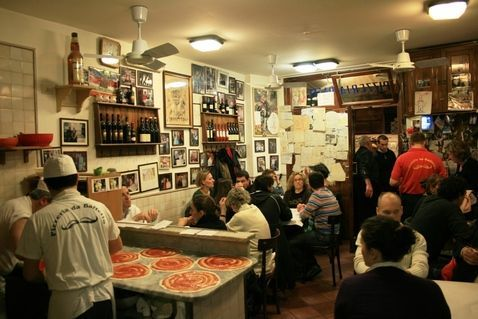
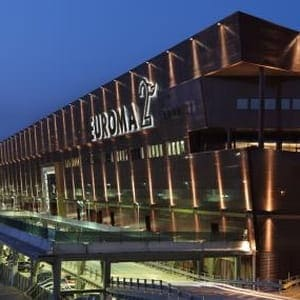
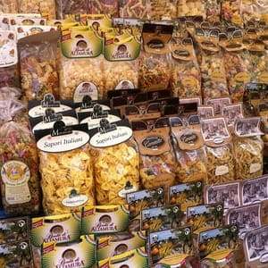
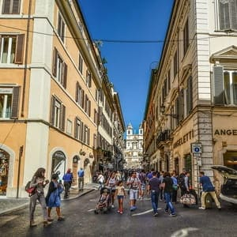
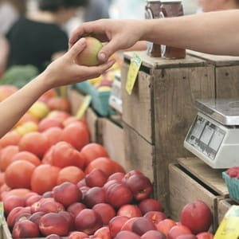

CLIMA
VERANO
Junio - Julio - Agosto
Min (ºC)
18º
Max (ºC)
31º
Los días son más largos y la agradable temperatura nocturna invita a salir. El clima es caluroso y muy húmedo, hasta puede llegar a ser agobiante (no olvidar tu botellita, la puedes recargar en múltiples puestos ubicados en diferentes esquinas de toda la ciudad, GRATIS). A pesar del calor, sigue siendo una de las épocas con más concurrencia en el año.
PRIMAVERA
Marzo - Abril - Mayo
Min (ºC)
8º
Max (ºC)
18º
Los días son cálidos y las actividades se empiezan a extender. Generalmente es aconsejable viajar en esta temporada ya que evitas el intenso calor del verano y las grandes multitudes. Además si la religión es de tu interés, podrás asistir al masivo Vial Crucis que se realiza en el Coliseo, y disfrutar de las festividades que conlleva la Semana Santa.
INVIERNO
Diciembre - Enero - Febrero
Min (ºC)
4º
Max (ºC)
12º
Las temperaturas son bajas, pero con suerte podrás ver una Roma nevada. De todas formas, las pistas de patinaje sobre hielo y los puestos navideños son algunas de las actividades recomendadas para esta época. La afluencia de los turistas baja en número, y por ese motivo, es interesante al momento de visitar los distintos museos e iglesias.
OTOÑO
Septiembre - Octubre - Noviembre
Min (ºC)
12º
Max (ºC)
22º
Es un clima templado y húmedo. Abundan los días soleados, agradables para recorrer la ciudad, pero a medida que nos vamos adentrando a la estación, las lluvias suelen ser más frecuentes, lo cual se puede ver afectados nuestro itinerario, ya que la principal actividad al visitar Roma es recorrer sus numerosas plazas y calles pintorescas.
COMER
La gastronomía italiana es una de la más reconocidas a nivel mundial. Las
pastas, como la lasagna o
los raviolis, y las pizzas con sus infinitas variedades, son los verdaderos protagonistas en las
mesas romanas. Aunque también, podes deleitar de diversos platos característicos, como la bruschetta
(pan tostado, aceite, ajo, y sal), los panini (sandwich típico), diferentes tipos de carnes y
pescados condimentados con especies (como el famoso pescado a la romana), el carpaccio, los quesos
(especialmente el pecorino), y algunos embutidos (como la bresaola, la mortadela y el prosciutto).
¡Y no nos olvidemos de los postres! El tan reconocido Titamisú, elaborado con queso mascarpone, es
famoso por ser el más elegido en las pastelerías italianas, y si es época de verano, nada mejor que
un “gelato” (helado artesanal) para disfrutar mientras recorres las calles de esta hermosa
ciudad.
Los restaurantes de pastas son moneda corriente en la ciudad, y no existe un lugar
específico, ya que hay miles donde podés sentarte y sin duda va a ser una buena elección. Pero si te
gustaría disfrutar de una vista hermosa a la Fontana dei Fuimi, en Plaza Navona, encontrarás
variados locales de pasta seca con una excelente atención y disfrute.
En la piazza Campo dei
Fiori encontrarás un mercado tradicional al aire libre de productos locales, donde podés encontrar
frutas, verduras, y otros artículos ligados a la gastronomía. Ideal para aprovechar su vista desde
las terrazas que se encuentran en los bares de alrededor.
Te recomendamos estos lugares para
desgustar la gastronomía en Roma:
IL GELATO DI SAN CRISPINO
Via della Panetteria, 42
Los mejores helados artesanales a media cuadra de la Fontana di Trevi. Popular por sus gustos naturales y cremosos.
POMPI
Via della Croce, 88
Una de las pastelerías más elegida para degustar el tiramisú más rico de la ciudad. Reseña: cerca de la Plaza Spagna.
PIZZERIA DE BAFFETTO
Via del Goberno Vecchio, 114
Reconocido por los turistas como el mejor restaurante de pizzas. Sus largas colas de espera, sin duda, valen la pena ya que su atención y su comida es la mejor calificada en las páginas de reseñas.


DORMIR
CENTRO HISTÓRICO
En esta zona te encontrarás cerca de las principales atracciones turísticas de Roma, y por lo tanto los alojamientos son de los más caros. Se debe tener en cuenta que en muchos lugares de esta zona los medios de transporte no pueden pasar, por lo tanto se recomienda recorrer a pie.
PLAZA DE ESPAÑA
Si te alojas en esta zona tendrás a las principales atracciones turísticas muy cerca, mientras que también podrás recorrer calles con tiendas de lujo, café y restaurantes. Esta es la zona con los alojamientos más caros y lujosos de Roma.
MONTI Y EL COLISEO
En este barrio no se encuentran tantos turistas como en otras zonas, por lo tanto es ideal para pasear y aprovechar la tranquilidad de sus calles repletas de galerías de arte y tiendas vintage. Los alojamientos aquí no son de los más económicos de Roma.
TRASTEVERE
Este barrio posee un ambiente bohemio repleto de bares y restaurantes. Los alojamientos aquí tienen un precio económico ya que se trata de albergues y hostales. Se debe tener en cuenta que tiene pocas conexiones de transporte público.
ESTACIÓN TERMINI
Aquí se encuentra la principal estacion de tren de Roma. Tiene buenas conexiones de transporte público. No es de las zonas más seguras de Roma durante la noche y tampoco la más bonita. Es una de las zonas más económicas de la ciudad.


TRANSPORTE
En Roma podrás movilizarte con diversos medios de transporte. Los billetes
que podas adquirir son el
billete sencillo (BIT) de 1,50 euros, un billete diario (BIG) de 6 euros, un abono turístico de 3
días (BTI) de 16,50 euros o un abono semanal (CIS) de 24 euros. También hay otros abonos mensuales y
anuales.
Estos billetes incluyen al metro, a los tranvías, trenes suburbanos, autobuses de la
empresa Cotral y autobuses y trolebuses. Los billetes se pueden comprar en las paradas de metro y en
los quioscos. Se puede adquirir un abono en caso de que tengas planificado usarlo muchas veces.
METRO
Posee tres líneas: la Línea A (Naranja), la Línea B (azul) y la Línea C (Verde). El horario del metro es de 05:30 hs gasta las 23:30. En el caso de los viernes y sábados el horario se extiende hasta las 01:30 hs.
AUTOBUS
Las líneas de autobús son: las Urbanas (U) que funcionan desde las 05:00 hasta la medianoche, las Nocturnas (N) que van desde la medianoche hasta las 05:00 hs, la Express (X) que realiza trayectos largos con pocas paradas, y las Exactas (E) que comunican el centro con los barrios periféricos.
TRANVÍA
Cuenta con seis líneas. El horario es desde las 05:30 a 24:00 hs.
TRENES SUBURBANOS
Cuenta con tres líneas: Roma-Lido, Roma-Viterbo y Roma-Giardinetti. El horario es de 05:30 a 22:30.
PRECIOS
COMIDAS Y BEBIDAS
- Menú (en zona cara): €15
- Menú de comida rápida: €8
- Café (zona cara): €1,39
- Cerveza (lata): €1,14 - Cerveza (pinta): €2,30.
- Gaseosa (2 litros): €1,90
- Tragos (en zona cara): €12
- Botella de vino: €8
TRANSPORTE
- Metro, tranvía, trenes, autobuses y trolebuses: Desde billetes de €1,50 euros a abonos mensuales de €35.
- Taxi (precio por kilómetro): De €1,10 a €1,60.
ALOJAMIENTO
Habitación doble
- Hoteles económicos: desde €55.
- Hoteles céntricos de mediana calidad: desde €120.
- Hoteles de lujo: desde €200.
COMPRAS
MODA
A pesar de que la capital italiana de la moda es Milán, Roma no se
queda
atrás cuando se trata de ir de compras. Cerca de Plaza España, en Vía Condotti y en Via
Borgognona
abundan las marcas de lujo más reconocidas mundialmente como Gucci, Prada, o Bulgari, entre
otras.
Pero si de variedad hablamos, en Via del Corso, calle que va desde Plaza Venecia hasta Plaza
del
Popolo, encontrarás diseño, moda y calidad además de locales de marcas populares con precios
más
accesibles. Via Cola di Rienzo es otra calle de estilo similar, muy cerca del Vaticano,
donde
podrás
hallar desde calzados y vestidos, hasta orfebrería y tiendas de recuerdos.
En cuanto a
centros
comerciales, los mas destacados son:
- CINECITTA’ DUE - Viale Palmiro Togliatti, 2
- PORTA DI ROMA - Via Alberto Lionello, 201
- EUROROMA2 - Viale dell’ Oceano Pacífico, 83
- GALLERIA ALBERTO SORDI - Piazza, 00187
MERCADOS
A lo largo y ancho de la ciudad romana, se concentran en distintos barrios, pequeños mercados al aire libre de productos locales, como textiles y alimentos, como también así, artículos artesanales que provienen de extranjeros residentes en el país. Estos son algunos de los más reconocidos:
PORTA PORTESE
El mercado más popular de la ciudad, se da a lugar en el barrio de Trastevere los domingos por la mañana, donde podrás comprar desde prendas de vestir, hasta antigüedades y muebles.
CAMPO DEI FIORI
Es una plaza donde abundan las tiendas gastronómicas de gran actividad diurna como nocturna. Es perfecta para pasar y tomar un aperitivo, o sentarse a cenar o disfrutar de un rico cóctel.
SAN GIOVANNI
Cerca de la Basílica de San Giovanni in Laterano, hallarás este pequeño mercado donde los productos de segunda mano, como ropa, accesorios o bolsos, son los destacados en los puestos que se encuentran alrededor de la plaza.
TIENDAS DE RECUERDOS
Cuando se trata de conseguir souvenirs que nos recuerden nuestra
pasada
por esta bella ciudad, estamos ante una tarea fácil ya que la mayoría de negocios están
cercanos a
las atracciones turísticas de Roma.
Si estás por la Fontana di Trevi, o cerca del Panteón, o incluso si bajaste de un tren y te
encuentras en Termini, la variedad de productos que aluden a lo más característico de la
cultura
italiana, son infinitas. Desde delantales con la imagen del coliseo, hasta llaveros con la
forma de
la moto “Vespa” son los sin fin de opciones que podés sortear entre las diferentes
tiendas.
Sin duda, el producto más codiciado es la pasta seca ya que se trata de un producto casero,
y de
buena calidad. La hallarás en una gran variedad de tipos, colores y sabores.
Otro artículo destacado, que tradicionalmente se suele regalar, es el famoso Limoncello
(licor de
limón), viene embotellado y lo encontrarás en diversos tamaños y precios.




